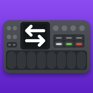
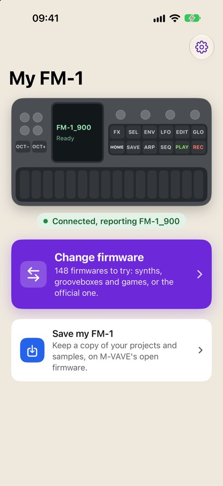
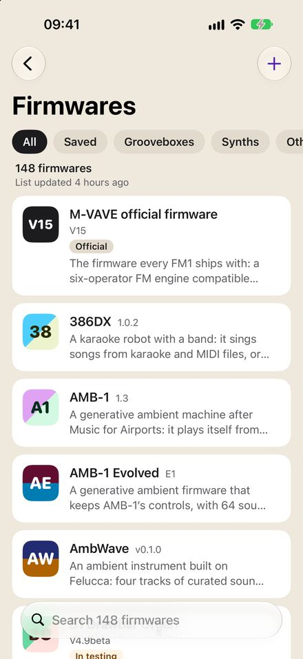
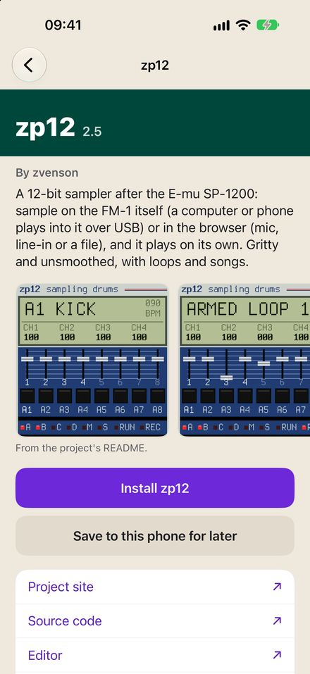
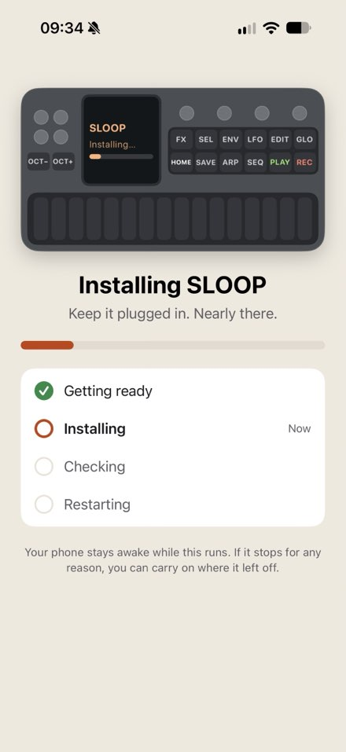
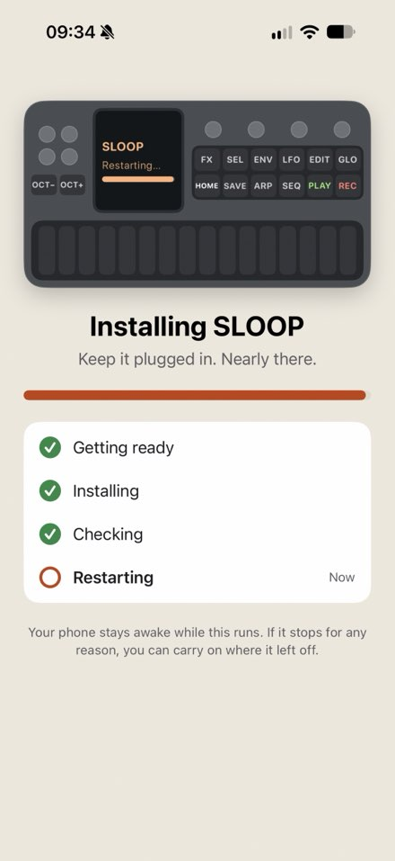
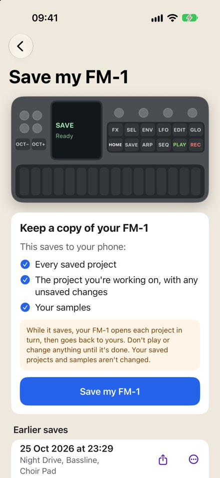

FM-SWITCH
Swap your FM-1's firmware over USB, from an iPhone, iPad or Mac.
iPhone and iPad: in TestFlight
Change firmware
Synths, grooveboxes and games to try, or M-VAVE's official one.
Save my FM-1
Keep a copy of your projects and samples (if you're running on M-VAVE's open firmware).
How an install goes
-
Step 1
Choose
Pick a firmware: synths, grooveboxes and games, each with its own page of pictures and links.
-
Step 2
Before you start
FM-SWITCH checks the package, and that exactly one FM-1 is connected.
Switching to a different firmware can erase the FM-1's projects and samples, so it asks first.
-
Step 3
Installing
Keep it plugged in. Nearly there.
- Getting ready
- Installing
- Checking Now
- Restarting
-
Step 4
Done
FM-SWITCH checks the FM-1 reports its new firmware.
About 20 seconds for V15, and under 40 for Felucca.
What it does
-
Loads of firmwares in one list
Aggregated from trusted lists The Firmware Hub, fm1-editor.com and aroum's FM1 Resource Hub, updated every day. Filter by kind, or show only firmwares built from source.
-
Save them for later
They're small (around 500 kB), so you can save the ones you'd like to use to your iPhone/iPad/Mac, and then install them any time even without a network connection.
-
Synced with iCloud (if you use it)
Firmwares you install or save on your iPhone are synced through iCloud and available almost instantly on other connected devices, including your Mac.
-
You can always go back
M-VAVE's official V15 "stock" firmware comes with the app.
-
Back up the whole FM-1 (Mac)
On a Mac, with the FM-1 in download mode, FM-SWITCH can back up its whole flash and restore it later.
Each time, macOS first asks for your password so FM-SWITCH's helper can run as an administrator, then for permission to use the FM-1 as a USB drive.
-
If it stops
Your phone stays awake while an install runs. If it stops for any reason, you can carry on where it left off.
-
Free
Every feature is free. If you'd like to say thanks, there's Ko-fi.
In the app
-

My FM-1 -

Firmwares -

A firmware's page -

Installing -

Restarting -

Save my FM-1
Under the hood
Native SwiftUI on iPhone, iPad and Mac. Talking to the FM-1 is FM1Kit, an open-source Swift package.
The source for both is on GitHub: FM-SWITCH and FM1Kit.
The iPhone and iPad app is in TestFlight now, and the Mac app is a free download from this page, notarised by Apple. For more info or discussion, find me on the FM-1 Discord.